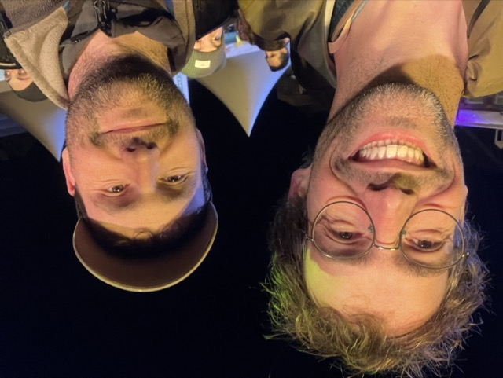
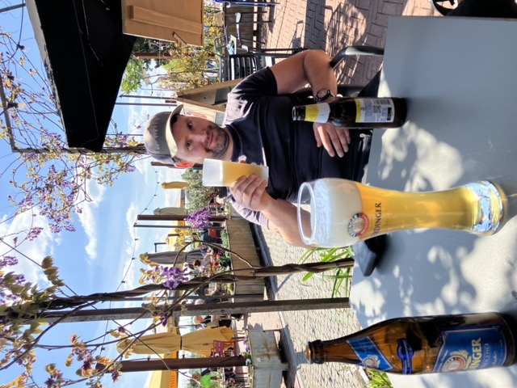
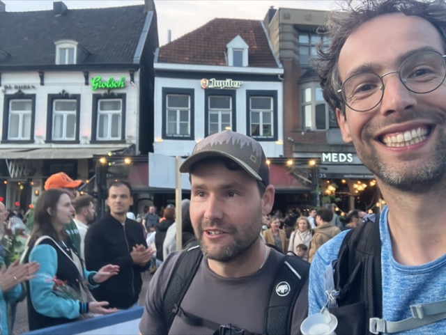
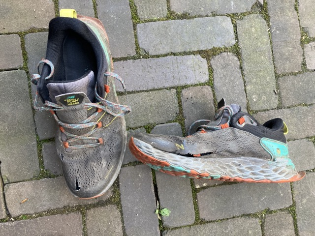

Ik weet niet precies hoelang geleden, ik denk een jaar of anderhalf, toen stelde mijn broer Paul voor om een keer de Kennedymars te lopen. Met daarbij het verhaal dat President Kennedy vond dat elke gezonde Amerikaanse man deze afstand moet kunnen lopen, ongetraind. Dus dan moesten wij dit vast ook kunnen. Normaal houdt ik meer van hardlopen, maar dit leek mij wel een gezellig uitje samen. Dus om voet bij stuk te houden stelde ik Paul begin dit jaar voor om die van Sittard te lopen.
De voorbereiding doet denken aan hoe Kennedy dit bedoeld had. Mijn hardloopkilometers tot op heden waren door een baby, een uitgebreid griepseizoen en daarna ook nog een peesblessure aan mijn linkerknie beperkt. Wandelen doe ik ook wel (godzijdank hebben we een hond, dan kom je elke dag buiten) maar meestal niet veel meer dan 5km, sporadisch een keer 8km, maar vaak ook maximaal 3km. De precieze afstand is onder andere afhankelijk van of mijn 2-jarige zoonje zelf wilt lopen en hoeveel eikeltjes er dan op het pad liggen. Maar dat is al een stuk meer dan Paul, die door omstandigheden volgens mij helemaal niet getraind heeft.
Het begin
De start van de Kennedymars is op zaterdagochtend om 05.00 in Sittard. Op vrijdagavond heb ik geholpen bij het naar bed brengen van de kinderen om vervolgens met de auto naar Paul te gaan in Noord Limburg. Daar een kopje thee en dan rond 22.00 naar bed. In een ander huis is het toch altijd even wennen met slapen, dus echt goed de slaap vatten ging pas rond de klok van elven, en om 03.00 ging de wekker alweer. Hup een broodje pindakaas naarbinnen en dan om 03.30 weer de auto in. Met het plannen de avond tevoren was het ‘maar’ 1u5min rijden zijn, maar helaas is er wat vertraging om 03.00 (afgesloten stuk snelweg). Dus dat wordt zelfs nog haasten. En een koffiestop is ook nog nodig, want die was op en dat kunnen we beiden wel gebruiken. Enfin, de rest zit mee, we parkeren de auto centraal in Sittard1 en haasten ons naar de start. Precies bij het startschot lopen we de markt op en kunnen dus gelijk vetrekken, ideaal!

Het eerste uurtje is even druk, maar wel heel leuk. Het weer is lekker, niet te koud, en je ziet allerlei goed gemutste mensen. Inclusief iemand met een hond, ik vraag mij af of die ook de hele weg heeft gelopen? We beginen lekker vlot, iets meer dan 6km/uur, dus dat gaat lekker. Zodra we Sittard uit zijn verspreiden de mensen zich langzaamaan over het de route en wordt het dus rustiger lopen.
Na zo’n 15km houden we een korte stop bij de eerste bevoorrading en controlepost. De verzorging is goed, met broodjes kaas, krentenbollen en fruit. Eigenlijk had ik zelf niets mee hoeven nemen (en dan te bedenken dat ik mijn zoontje de dag tevoren een broodje met rozijntjes geweigerd heb omdat ik dacht dat we die zelf nodig zouden hebben).
Zoals ik gewend ben van Limburg worden de asperges hier uitgebreid geadverteerd in deze tijd van het jaar. Aangezien we morgen pasen bij mijn ouders vieren in Noord Limburg bel ik mijn moeder, ‘mam, hebben ze bij jullie al asperges?’ (spoiler: ja, en die kwamen op tafel). Goed we lopen verder. Onderweg krijgen we ook nog sultanas en vullen we onze flessen bij met waterpunten die tussen de controleposten staan. Dat is wel grappig, die bestaan uit twee kraantjes met boven de ene ‘gewoon’ en boven de andere ‘bijzonder’. Dit moet je volgens mij lezen als ‘gewoon bijzonder’, de slang aan de achterkant is namelijk dezelfde voor beide kraantjes. Toch pakt bijna iedereen water uit het kraantje met daarboven ‘gewoon’. Ik zelf ook de eerste keer.
In Posterholt komen we bij de tweede controlepost. Het wordt toch wel warm en zonnig nu, en in plaats van krentenbollen had ik beter zonnenbrand kunnen inpakken. Dus maar snel een lokale DA drogisterij in om zonnenbrand te kopen. Paul loopt vast door en ik roep ‘ik haal je wel in’. Ik race door de DA, snel weer naar buiten, door de controlepost en door want Paul zie ik nergens. Zo’n halve kilometer verderop heb ik hem nog steeds niet gezien dus toch maar eens bellen. ‘Ben je doorgelopen?’ zegt hij. ‘Ja want ik zag je niet’. ‘Ooh ik was even binnen kijken.’ Communicatiefoutje, dus maar even rustig wachten op een muurtje.
Het midden
Hoewel we, eenmaal herenigd, nog steeds vlot doorlopen beginnen mijn voetzolen nu toch wel een beetje te branden. Dat was eigenlijk na zo’n 15km al het geval. Vooraf was ik vooral bang dat mijn schoenen het zouden begeven. Het zijn oude New Balance trailschoenen, die tegenwoordig dienstdoen als wandelschoenen, met een kleine 3000km op de teller. Ik had besloten dat dit hun pensioen zou worden, maar er vallen toch wel al veel gaten in. Echter, in plaats van mijn schoenen moet ik mij misschien meer zorgen maken om mijn voeten. Hier wordt het toch zwaarder. We lopen langs de kenmerkende koeltorens van de Clauscentrale en vlak daarvoor na het oversteken van de A73 zie ik een man met een baby in een draagdoek lopen. Die zal toch niet de hele route meegaan? We steken de maas over en hebben het daar beiden toch even zwaar. We zitten bijna op de 50km, één vierdaagsedag, maar de voeten branden en we moeten nu toch even echt rusten. Grappig hoe kort daarvoor je allemaal mensen blij hoort zijn dat ze even een trapje mogen aflopen, wat afwisseling uit het monotone rechtdoor lopen over overwegend asfalt. Dus we pakken in Wessem een terrasje aan de Maas en drinken alcoholvrij biertje. Dit doet even goed, maar hierna begint het echte afzien.

Richting Sittard
Van Wessem gaan we naar Thorn en dan de grens over naar Kessenich in Belgie. Over het algemeen ben ik van mening dat de welstandscommissie in Nederland zeker een meerwaarde heeft t.o.v. hoe ze het in België aanpakken. Alleen vandaag vind ik België toch mooier. De hoofdreden: het ontbreken van rolluiken.
Het tempo gaat er steeds verder uit van 10min/km, naar 11min/km naar 12min/km. Onderweg zien we telkens dezelfde mensen om ons heen. Schijnbaar vergaat het velen hetzelfde. Daarmee komen we ook sommigen supporters meermaals tegen, en sommigen herkennen ons ook en moedigen ons dan ook aan, hulde voor de sfeer. In plaats van naast elkaar lopen we nu veelal achter elkaar. Ik voorop en Paul een paar meter daarachter. Pauze? Liever niet want de vraag is dan of je nog op gang komt. Maar rond de 12min/km stabiliseert het tempo ook en ondanks dat de gezichten er niet fraai meer bij staan lijken we hier toch een soort equilibrium te hebben bereikt waarbij we niet meer harder kunnen maar het verval ook uit blijft.
Een stuk kersenvlaai dat wordt uitgereikt in Maaseik doet de de gemoederen goed. Ik zie Paul helemaal opfleuren en hij vraagt mij waarom ik maar zo’n klein stukje heb gepakt. Maar ik was zelf ook al aan het kijken voor een groot stuk, hij heeft zelf gewoon de allergrootste punt meegenomen. Daar ben ik ook wel blij mee, want in de krentenbollen die ik hem tot zijn ongenoegen blijf aanbieden had hij echt geen zin meer.
Wandelen blijkt toch echt iets anders dan hardlopen. Inmiddels voel ik voor de tweede keer een blaar onder mijn voet kapotspringen. Met hardlopen heb ik die zelden. Niet kijken, gewoon doorlopen dan wen je er vanzelf aan. De spieren voelen gelukkig bij mij nog wel goed, maar bij Paul minder. En dat geldt voor meer jonge (ongetrainde?) mannen die ik om mij heen zie. Bij sommigen is het echt een martelgang geworden. Maar finishen mag tot na middernacht dus dat laatste stuk gaan ze ook zo waarschijnlijk wel halen. Of het leuk is, dat valt te betwijfelen. Grappig, want ik zie ook vitale 70-plussers met soepele tred ons voorbijlopen. Mijn aanname is dat zij wel getraind zijn en dat je dit dus ook terugziet na een kleine 80km wandelen.
Het slot
Het laaste stuk is uitlopen. Ergens onderweg dachten we: met dit tempo zijn we rond 18.30 terug. Dat werd steeds een beetje bijgesteld. Vooraf dacht ik, om 21.00 zijn we uiterlijk wel weer thuis. Dat bleek realistisch, want pas rond 20.15 lopen we de markt weer op. Daar worden we onverwachts nog aangemoedigd door mijn buurman en zijn schoonbroer. Zij hebben zelf ook gelopen en zijn blijven wachten om ons nog even aan te moedigen, heel leuk!

We praten even na en daarna drinken Paul en ik nog een drankje in de kroeg. Alcoholvrije weizen voor mij, pilsje voor Paul. Welverdiend! Kennedy zou trots zijn geweest (of eigenlijk: niet teleurgesteld?).
Daarna snel terug na de parkeergarage, nog zo’n 600m lopen. In de auto schone sokken aan (in plaats van krentenbollen had ik die beter ook gewoon voo onderweg mee kunnen nemen, had misschien wat blaren bespaard) en zonder schoenen terug naar huis rijden. Omdat we nog niet hebben gegeten gaan we bij Venray nog even door de McDrive. Paul neemt een milkshake en ik een koffie bij mijn Vegan Spicey McChicken. Ik moet immers nadat ik Paul heb afgezet nog door naar huis, zodat we morgen wel de auto hebben om paaseieren te gaan zoeken (en asperges te gaan eten). Daar kom ik om 23.40 aan, gauw nog wat extra eten, douchen en iets na twaalven in bed. Dat was een lange, maar memorabele dag. Of we dit nog eens doen? Paul zegt van niet, maar ik weet inmiddels wel beter…

Ondanks dat de spierpijn alles meevalt loop ik twee dagen later toch nog erg lastig. Twee grote bloedblaren op de hielen, een ook voor op de voetzool in het midden aan beide voeten blaren. De vervelendste, een likdoon onder één van de blaren die kapot was gesprongen tijdens het lopen. Na een weekje gaat lopen weer prima maar de les hieruit is toch dat wandelen echt een andere discipline is dan rennen.
Voetnoten
Footnotes
€5,- voor een hele dag, wat een verschil met de randstad!↩︎